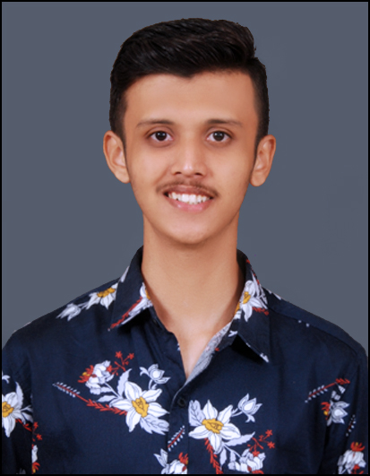

Sarthak Relekar

Summary
I consider myself a responsible and orderly person. I am looking forward for my first work
experience where I can improve my skills.
Education
BSC IN INFORMATION TECHNOLOGY
- B.K Birla College of Arts,Science,Commerce Kalyan
- CPGI : 9.18
XII (HSC)
- K. M. Agrawal College of Arts, Commerce & Science (Maharashtra State Board), Kalyan(W)
- Passed with 71.85%
X (S.S.C)
- Don Bosco English High School(Maharashtra State Board), Kalyan(W)
- Passed with 73.00%
Projects
Website Development Project
Students Recruitment System
- Creating user friendly website which will help HR to easily recruit the fresher’s student.
- This application also helps the students to find job according to their skills.
- This will also help to reduce the time for recruiting students.
Published Research Paper in IJISRT
(International Journal of Innovative Science and Research Technology)
MY RESEARCH
Skills
- Adaptability
- Positive approach
- Quick learner
- Time management
- Communication
Technical Skills
- Programming Languages : HTML, CSS, Java, C#
- Database: MySQL